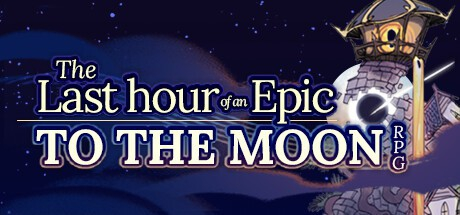

2026年11月
6 条
其中 6 条带正文
广播发布后不可编辑，所以每条都是那一刻的原话。
2026-11-10 12:59:59
听过 I Really Want to Stay at Your House ★★★★★
第一次听的时候和动画太搭了！这个女声+电子真好听！
2026-11-10 06:14:30
想看 小气鬼
清一色也在里面？有点兴趣了
2026-11-08 15:39:38
玩过 冒险岛怀旧服 MapleStory Classic World ★★★★☆
心心念念的怀旧服发了，改了不少东西，但是升级速度慢这个是没改的。开服第一周升到了24级。现在KPQ给的经验非常少了，所以不太容易刷级了。另外这个40个线每一个线都巨爆满，根本找不到能练级的好地方了，只能抢怪了。蜗牛王MANO的任务每一个线都好几个人排队，而且1-2小时才刷新，真的是吐了。另外物价涨的飞起，我才一周没玩，物价就翻倍了20倍，身上的钱都贬值了啊。。。让我从哪找到动力去继续玩。。
2026-11-08 03:27:18
希望不是烂片了
2026-11-05 13:38:00
想看 魔法秘境 / Hexed
Westfield 看到广告牌了
2026-11-04 02:50:20

小红书给我推荐了高瞰的帐号，然后就发现了这个完结篇